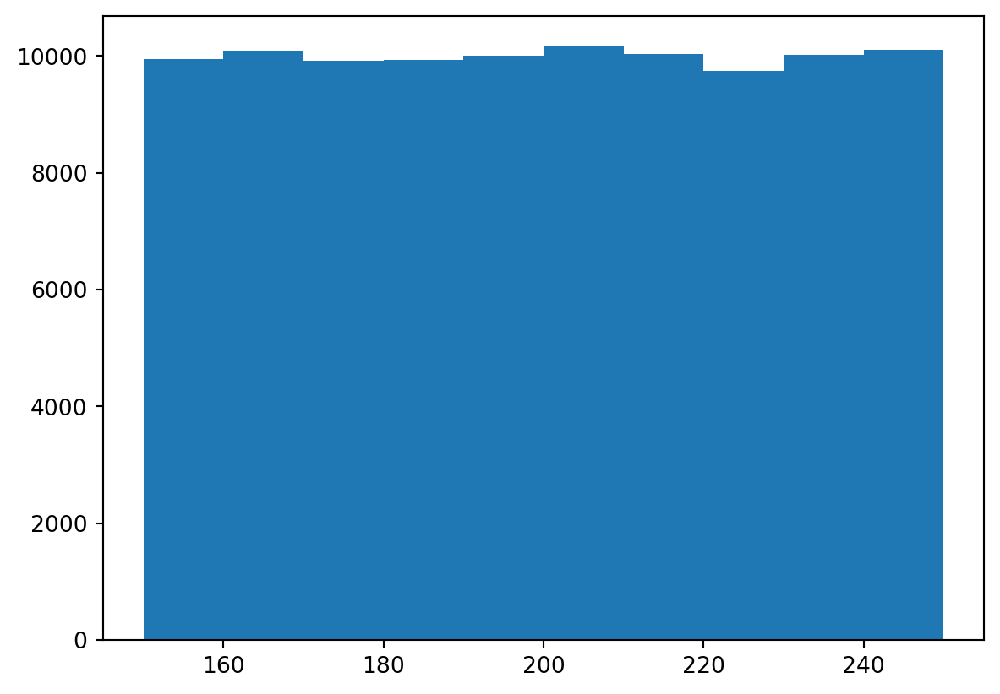
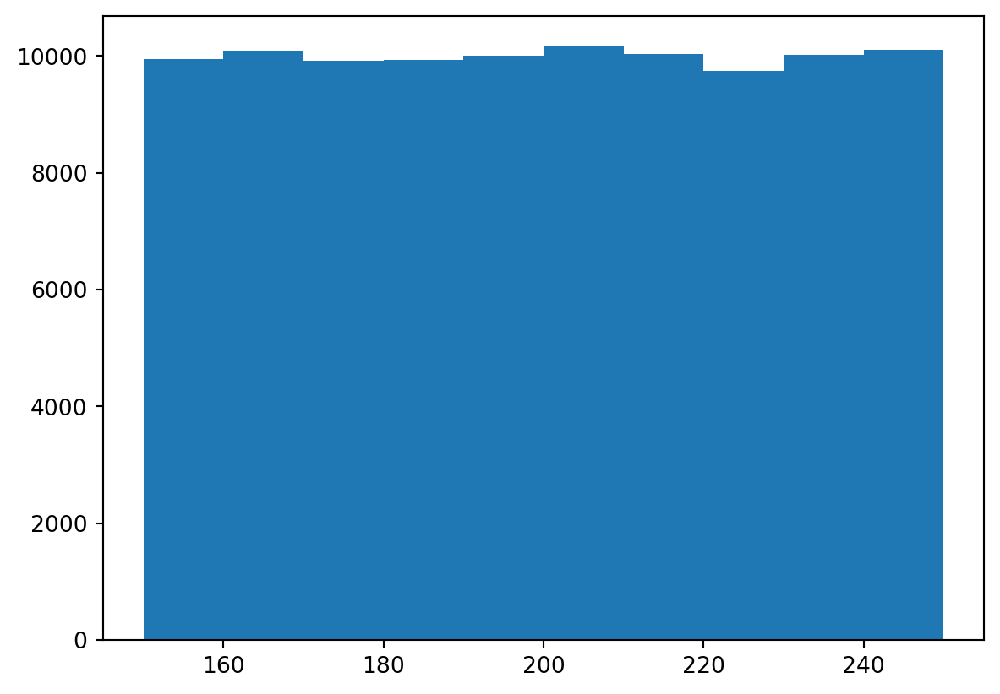
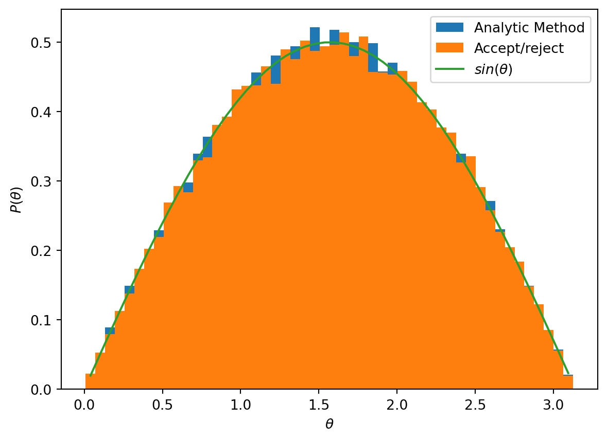
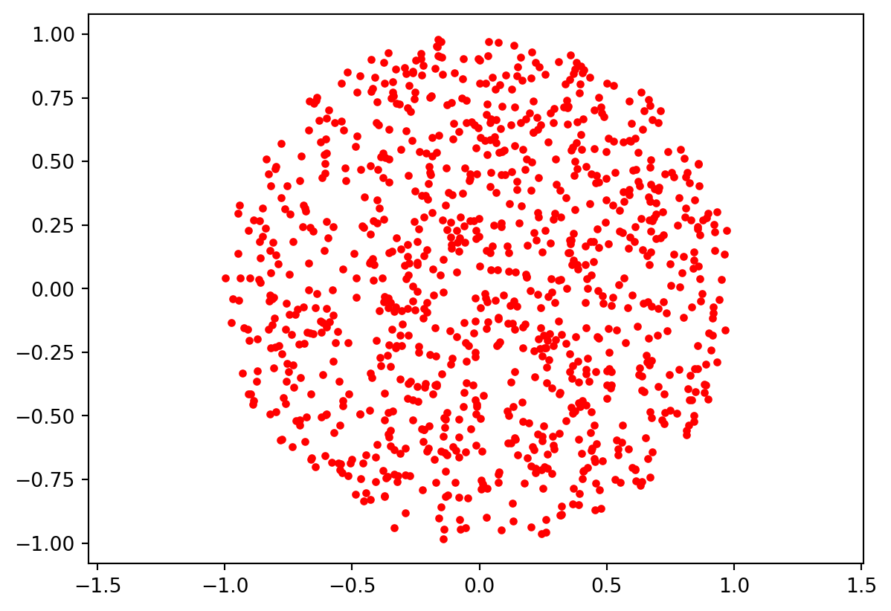
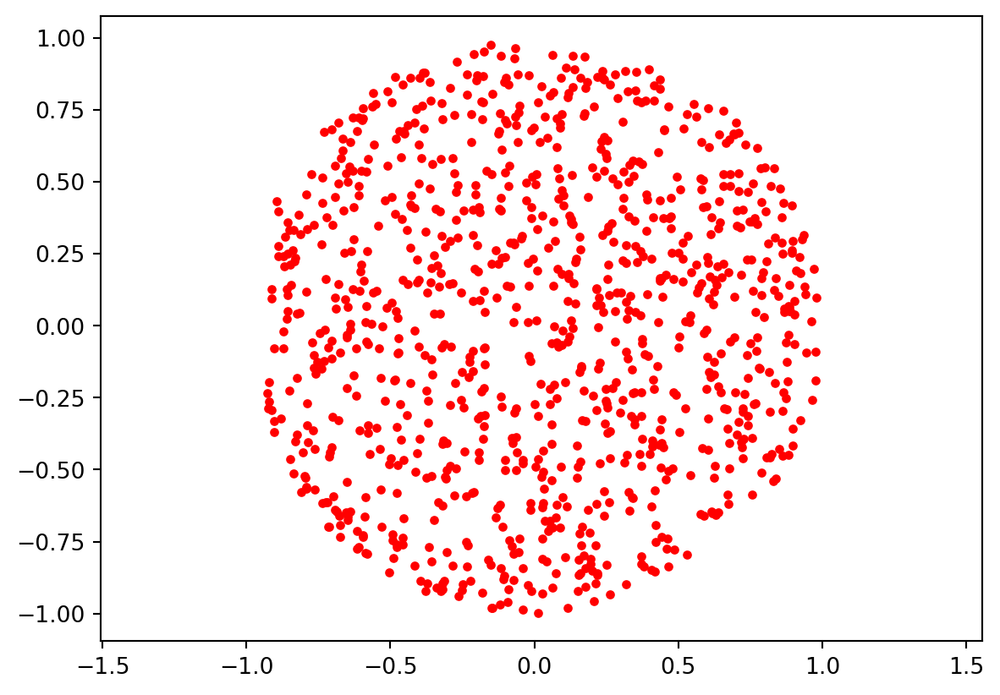

import numpy.random as random
import matplotlib.pyplot as plt
# produce random numbers in the range 150-250
a = 100*random.random(int(1e5))+150
plt.hist(a)
plt.show()
We will frequently want to generate random numbers according to a particular probability distribution, or in the jargon ‘sampling’ from the given distribution. There are two basic methods for achieving this; an analytical method, and the accept/reject method.
In the below, we assume we are provided with a random number generator that returns pseudo-random numbers with a uniform probability distribution in the interval \([0,1)\). In Python, numpy.random provides the random() function, which does exactly this. A variety of other probability distributions are provided by numpy.random, and in general these should be used when possible. However, the techniques described here allow any desired PDF to be sampled.
We will often need uniform probability distributions over an interval other than \([0,1)\). It is straightforward to map this interval to the desired one, as shown in the example below.
import numpy.random as random
import matplotlib.pyplot as plt
# produce random numbers in the range 150-250
a = 100*random.random(int(1e5))+150
plt.hist(a)
plt.show()
The above transformation is a special case of the method described in this section. We can consider a random number generator that produces values x over the interval \((x_1, x_2)\) with probability \(P(x)\), which we wish to convert to values y on the interval \((y_1, y_2)\), with probability \(P'(y)\). To construct a transformation from a generated value \(x_{in}\) to an output value with the required distribution, \(y_{out}\), we require that the cumulative distributions are equal :
\[\int_{x_0}^{x_{in}} P(x) dx = \int_{y_0}^{y_{out}} P'(y) dy \tag{4.1}\]
Note that for \(x_{in} = x_2\), \(y_{out} = y_2\) both integrals must equal 1.
If the LHS of the above equation is uniform on the interval \([0,1)\), then we have :
\[x_{in} = \int_{y_0}^{y_{out}} P'(y) dy \tag{4.2}\]
If we then define the function \(Q(y_{out})\) such that :
\[Q(y_{out}) = x_{in} = \int_{y_0}^{y_{out}} P'(y) dy \tag{4.3}\]
Then the transformation we must apply to \(x_{in}\), in order to obtain \(y_{out}\), is simply the inverse function, ie :
\[y_{out} = Q^{-1}(x_{in}) \tag{4.4}\]
In this example, we will write a function to produce values \(y\) in the interval \([0, \pi)\) with probability distribution proportional to \(\sin(y)\).
Here, the integral above becomes :
\[ \begin{aligned} Q(y_{out}) &= \frac{1}{2}\int_{0}^{y_{out}} \sin(y) dy \\ &= -\frac{1}{2}\cos(y_{out}) + C \end{aligned} \tag{4.5}\]
Note the factor \(\frac{1}{2}\) is required to ensure the integral from \(0\) to \(\pi\) is equal to 1. We can determine the constant of integration by requiring that \(Q(0) = 0\), for \(x_{in}=0\) and \(Q(\pi)=1\) for \(x_{in}=1\).
We then find that
\[Q(y_{out}) = -\frac{1}{2}\cos(y_{out}) + \frac{1}{2} \tag{4.6}\]
And our inverse transformation is :
\[y_{out} = Q^{-1}(x_{in}) = \cos^{-1}(1-2x_{in}) \tag{4.7}\]
def randSinAna():
"""Generate a random theta between 0 and pi, with PDF sin(theta) using analytical method"""
x = random.random()
return np.arccos(1-2*x)import numpy as np
# generate 50,000 points using a list comprehension
n1s = [randSinAna() for _ in range(50000)]
# plot a histogram
hist1, bins1, patches1 = plt.hist(n1s, bins=50, density=True, label="Analytic Method")
# plot a sin(theta) function for comparison
bin_centres = (bins1[1:] + bins1[:-1])/2
plt.plot(bin_centres, np.sin(bin_centres)/2, label=r'$sin(\theta)$')
plt.xlabel(r'$\theta$')
plt.ylabel(r'$P(\theta)$')
plt.legend()
plt.show()It might be worth highlighing the method used here (and in examples below) to generate a large number of points. This is a list comprehension. The list is generated by calling the first argument in the square brackets (here randSinAna()) for every iteration of the for loop. The for loop uses the underscore instead of a loop variable, since no variable is required. But in other cases, one could use a standard for loop to generate values in a list, eg :
[i for i in range(5)][0, 1, 2, 3, 4]For some PDFs, the integral required by the previous method cannot be determined analytically. In such cases, the accept/reject method provides a simple alternative. This method involves three steps : 1. a random number, \(y\), is generated in the desired interval \((y_1, y_2)\) 2. a second random number, \(p\), is generated between 0 and the maximum value of \(P'(y)\) 3. if \(p < P'(y)\) then \(y\) is returned, otherwise it is rejected and the process is repeated
This method is clearly less efficient than the analytical method, since two random numbers are generated for each number returned, and some fraction of these are rejected. However, it allows us to generate any arbitrary probability distribution.
Here we demonstrate the accept/reject method for the same example as above, to produce values \(y\) in the interval \([0, \pi)\), with probability distribution proportional to \(\sin(y)\).
def randSinAR():
"""Generate a random theta between 0 and pi, with PDF sin(theta) using accept/reject method"""
while True:
x = np.pi * np.random.random()
y = np.random.random()
if y < np.sin(x):
return x
else:
continue# generate 50,000 points using a list comprehension
n2s = [randSinAR() for _ in range(50000)]
# plot a histogram from the analytic method
hist1, bins1, patches1 = plt.hist(n1s, bins=50, density=True, label="Analytic Method")
# plot another histogram from the accept/reject method
hist2, bins2, patches2 = plt.hist(n2s, bins=bins1, density=True, label="Accept/reject")
# and the sin(theta) function for comparison
plt.plot(bin_centres, np.sin(bin_centres)/2, label=r'$sin(\theta)$')
plt.xlabel(r'$\theta$')
plt.ylabel(r'$P(\theta)$')
plt.legend()
plt.show()
Both analytic and accept/reject methods can be used to generate distributions of more than one variable. This often requires a bit of thought - the two methods may be more or less suitable to particular problems.
Here we illustrate the two approaches to generating uniformly distributed random numbers on the unit disc.
An analytic method for the unit disc problem needs to ensure that the density of points is constant over the disc, ie that \(P(x,y) \propto dA\) for area element \(dA\). In polar coordinates, we can write this as :
\[P(x,y) \propto dA = r dr d\phi\]
Since we will start by generating values with uniform distributions (let’s say \(u\) and \(v\)), we want to obtain transformations \((u,v) \rightarrow (r, \phi)\) such that :
\[dA = r dr d\phi= du dv\]
Clearly these substitutions are sufficient :
\[du = r dr\] \[dv = d\phi\]
Clearly we can just generate \(\phi\) with a uniform distribution. The function to produce \(r\) from uniformly distributed \(u\) is obtained by integration :
\[u = \frac{1}{2}r^2\]
and
\[r = \sqrt{2u}\]
However, this will produce a disc with incorrect area. The required area is \(\pi\), so we can obtain the constant of integration by requiring \(\int dA = \pi\), which gives :
\[r = \sqrt{u}\]
import numpy as np
import matplotlib.pyplot as plt
def unitDiscAna():
phi = 2 * np.pi * np.random.random()
r = np.sqrt(np.random.random())
# convert to cartesian coordinates
x = r * np.cos(phi)
y = r * np.sin(phi)
return np.array([x, y])
ps = np.array([unitDiscAna() for _ in range(1000)])
plt.axis('equal')
plt.scatter(ps[:,0], ps[:,1], marker='.', c='r')
plt.show()
Suppose we want to randomly generate points \((x,y)\) within a unit disc. A simple approach is to generate uniform distributions of \(x\) and \(y\) separately, and then use an accept/reject method to remove any points not in the disc (ie. where \(\sqrt{x^2 + y^2} \gt 1\)). This is illustrated in the example below.
def unitDiscAR():
x = 2 * np.random.random() - 1
y = 2 * np.random.random() - 1
while np.sqrt(x**2+ y**2) > 1:
x = 2 * np.random.random() - 1
y = 2 * np.random.random() - 1
return np.array([x, y])
ps = np.array([unitDiscAR() for _ in range(1000)])
plt.axis('equal')
plt.scatter(ps[:,0], ps[:,1], marker='.', c='r')
plt.show()
Note that since the unitDisc() method returns a vector, we need to :
unitDisc() many times) into a 2D arrayps[:,0] gives a 1D array of \(x\) values.